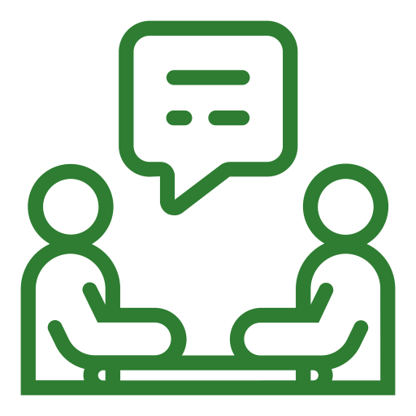
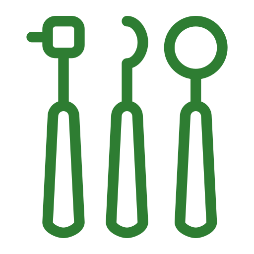
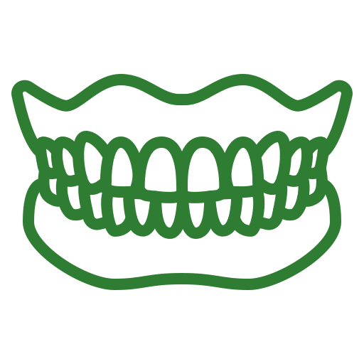

Protetyk z dojazdem do domu – Poznań
- Strona główna
- Wizyty domowe
Gdy wizyta w pracowni jest wyzwaniem - przyjedziemy do Ciebie
Rozumiemy, że dla niektórych pacjentów podróż do pracowni może być dużym wyzwaniem. Problemy z poruszaniem się, stan zdrowia po zabiegach czy po prostu trudy logistyczne - to wszystko może utrudniać dostęp do profesjonalnej opieki protetycznej.
Dlatego to my przyjedziemy do Ciebie, zapewniając ten sam, wysoki standard opieki w zaciszu Twojego domu. Brak możliwości dojazdu nie jest już barierą w dostępie do profesjonalnej opieki protetycznej.
Zapytaj o wizytę domowaporozmawiajmy o potrzebach Twoich bliskich

Dla kogo przeznaczona jest usługa wizyt domowych?
- Dla seniorów i osob o ograniczonej mobilności, dla których podróż jest dużym wysiłkiem
- Dla pacjentów leżących, przewlekle chorych lub w okresie rekonwalescencji
- Dla mieszkancow domow opieki i placowek leczniczych
- Dla wszystkich, którzy cenią sobie maksymalny komfort, dyskrecję i indywidualne podejście w znanym sobie otoczeniu

Pełen zakres usług protetycznych bez wychodzenia z domu

Bezpłatne konsultację i porady
Pierwsza wizyta może mieć charakter konsultacyjny. Ocenimy stan uzebienia, doradzimy najlepsze rozwiązanie i przedstawimy plan leczenia wraż z kosztorysem.

Pobieranie wycisków pod nowe protezy
Dysponujemy profesjonalnym, przenośnym sprzetem, który pozwala na precyzyjne pobranie wycisków w każdych warunkach, z zachowaniem pełnej higieny i komfortu pacjenta.
Naprawa i korekta istniejących uzupełnień
Wiele drobnych napraw i korekt (np. uszczelnienie luźnej protezy) możemy wykonać podczas jednej wizyty.

Dopasowanie i oddanie gotowej protezy
Finalne dopasowanie nowej protezy odbywa się w domu, co pozwala na idealne dostosowanie jej w naturalnym dla pacjenta środowisku.
Jak umówić wizytę domowa? Prosty proces w 3 krokach
Kontakt telefoniczny
Zadzwoń do nas. Podczas krótkiej rozmowy zapytamy o stan pacjenta, jego potrzeby i adres. Wspolnie ustalimy dogodny termin wizyty.
Wizyta specjalisty
Nasz protetyk przyjedzie w umówionym terminie z całym niezbędnym, sterylnym sprzetem. Z pełnym szacunkiem i cierpliwością przeprowadzimy konsultację lub zabieg.
Realizacja i dalsza opieka
W zależności od potrzeb, wykonamy usługe na miejscu lub rozpoczniemy proces tworzenia nowej protezy, informując o kolejnych etapach.
Bezpieczeństwo i profesjonalizm - Twoj spokoj jest naszym priorytetem
Rygorystyczne zasady higieny
Stosujemy rygorystyczne zasady higieny i sterylizacji, używając jednorazowego sprzetu tam, gdzie to możliwe.
Nowoczesny, przenosny sprzet
Dysponujemy nowoczesnym, przenośnym sprzetem, który gwarantuje taką samą jakość usług jak w pracowni.
Wieloletnie doświadczenie
Nasz specjalista ma wieloletnie doświadczenie w pracy z pacjentami starszymi i o szczególnych potrzebach.

Zapewnij swoim bliskim najlepszą opiekę - bez stresu i wysiłku
Masz pytania? Chcesz dowiedzieć się, czy możemy pomóc w Twojej konkretnej sytuacji? Zadzwoń do nas. Z przyjemnością i bez żadnych zobowiązań odpowiemy na wszystkie Twoje wątpliwości.
Umów wizytę domowa